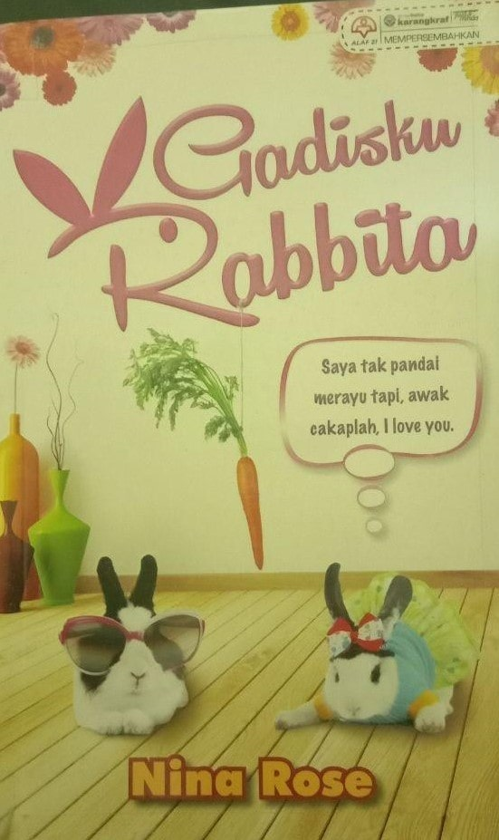

PRELOVED BOOKSTORE | 

Gadisku Rabbita
Preloved Price: RM 15.00
Category:Romance
Summary:ILA NADIRAH, gadis remaja yang masih tercari-cari makna kehidupan. Perkenalan dengan dua lelaki membuatkan jiwa mudanya bergoyang. Pandang kanan Hakimi, pandang kiri Andrew. Tetapi orang kata jalan lurus itu lebih baik daripada belok kanan atau kiri. Ila garu kepala... Dia terjebak dalam cinta tiga segi ke? Wah, hebat! Baru kali pertama bercinta, hatinya disapa dua orang lelaki sekali gus. Yang mana satu harus dipilih? “Dia comel. Suka melompat sana sini macam arnab. Eeii... geram!” Hakimi tidak peduli! Dia tetap mahukan Ila. Apa nak jadi, jadilah! Bersama Ila, cinta bukan lagi bagaikan biskut, tapi oksigen. Tapi bagaimana mahu membuat Ila menerimanya? Gadis arnab tu degil! “Saya tak main-main. Saya sayang awak, tapi tak boleh nak bagi lebih.” Andrew tidak berani berhadapan risiko meskipun tahu hati Ila dalam genggamannya. Dia tidak mahu kehilangan Ila, tapi masalah yang satu itu menyukarkan hubungan mereka. Sudahnya, Ila terjebak dalam mainan perasaan yang maha aneh bernama cinta!
| Title | Gadisku Rabbita |
|---|---|
| ISBN | 9789831249086 |
| Format: | Paperback |
| Author: | Nina Rose |
| Category: | Romance |
| Publisher: | Alaf 21 |
*Reminder: Please copy&paste the title of the book to put into the order list and also please calculate the price of the book your own to pay it on checkout form.